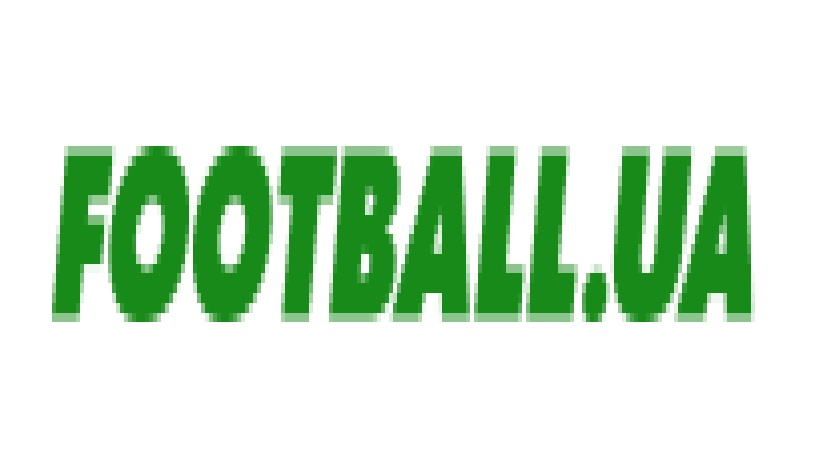
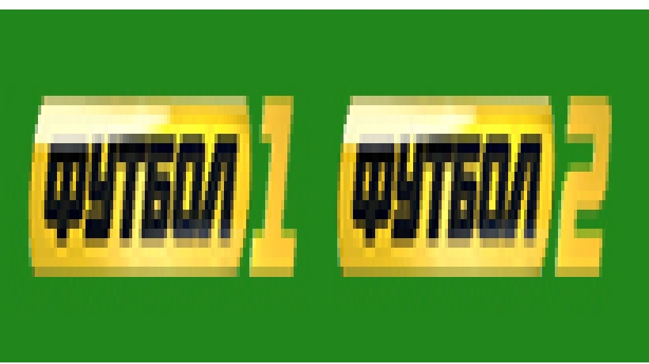

Один з найкращих веб-ресурсів на спортивну тематику. Дозволяє користувачу переглядати інформацію як про поточні події так і про ті що вже відбулися.

Український веб - ресурс який дає користувачу можливість стежити за футбольними подіями які відбуваються у світі.

Один з кращих веб - ресурсів який надає можливість не лише стежити за результатами футбольних подій, ай переглядати пряму трансляцію матчів.